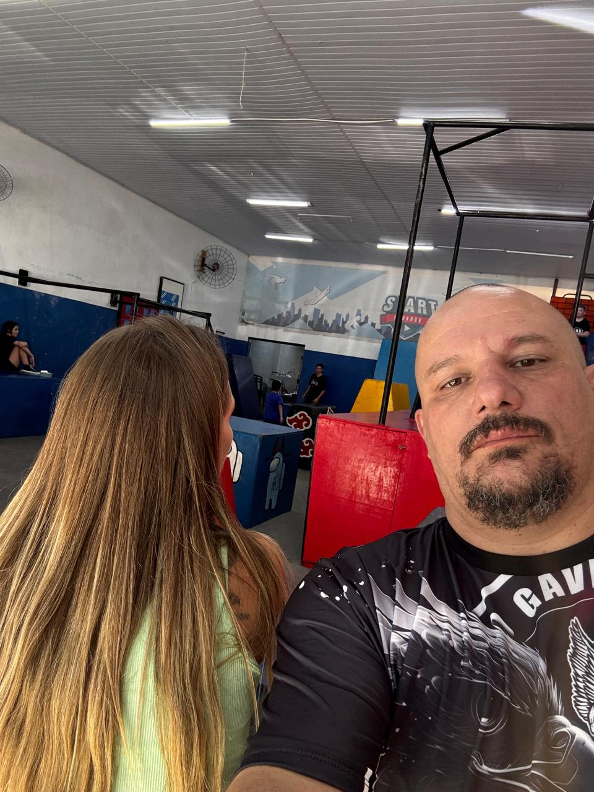
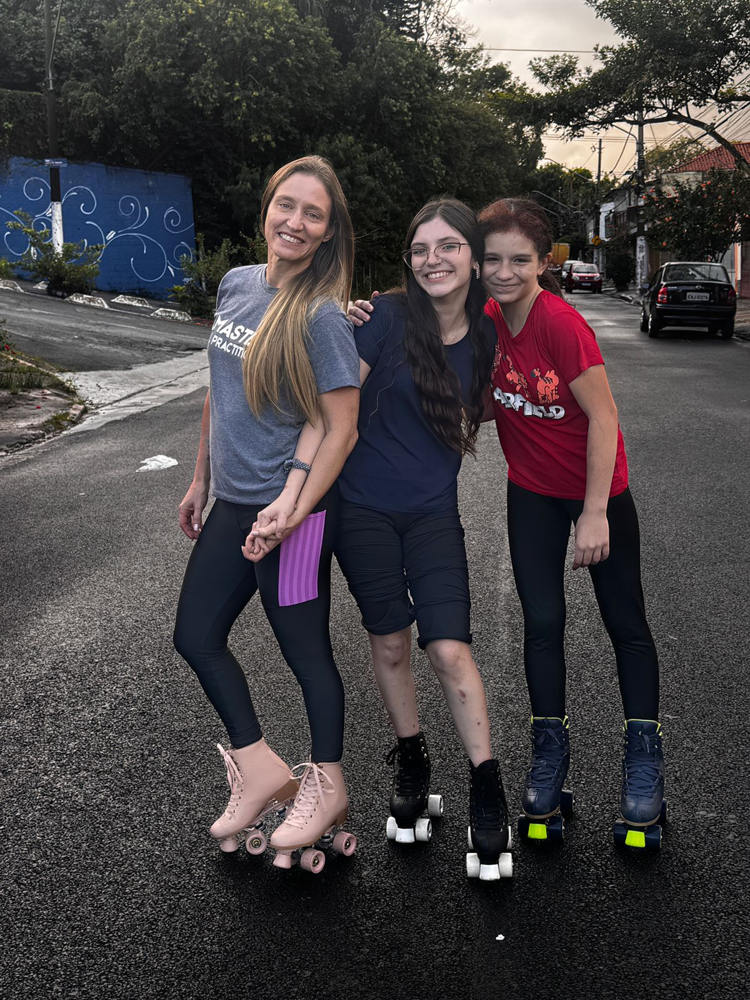

Momentos Especiais

Com os Filhos
Momentos especiais com seus tesouros mais preciosos

Com o irmão
Laços fraternos que fortalecem a família
Com a mãe
Amor que transcende gerações, sempre presente

A SUPER tia
A tia mais querida e divertida do mundo!

Passeio Inventado
Mais uma das suas aventuras inesquecíveis

No Trabalho
Inspirando e fazendo a diferença profissionalmente
Seu momento
Cristiane em sua essência: forte, livre e inspiradora